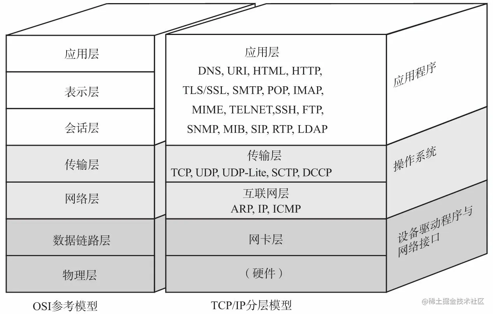

TCP
tcp 网络模型 OSI网络模型

tcp 四层网络模型 应用层 传输层 网络层 数据链路层
OSI 七层网络模型 应用层 表示层 会话层 传输层 网络层 数据链路层 物理层
tcp 三次握手
客户端 发送 SYN seq = x
服务端 接受到 后发送 SYN ACK ack = x+1 seq=y
客户端 接收后发送 ACK ack=y+1 seq=x+1
三次握手期间，任何一次未收到对面的回复，都会重发
面试问题
1. 为什么需要三次握手
原因1：编号 + 确认机制对应TCP 字段的 seq ACK；正式进行数据发送双方，需要对连接的建立进行确认和初始化 三次
第一次 客户端发送 SYN 加自己的初始化序号 seq=x
服务端收到后 第一次握手完成（客户端无法确认 ）（服务端 确认客户端 发送正常）
第二次 服务端 进行发送确认 ACK ack=x+1同时加上自己 的初始化序号 SYN seq=y
客户端收到后 第二次握手完成（服务端 发送 和 接收能力都OK，但是服务端 还不知道 客户端 接收能力是否OK）
因此需要第三次握手，发送 ACK ack=y+1
服务端接收到后，确认 （客户端接收能力正常）
小结：对 双方的 发送接受 能力进行确认
原因2：
如果使用两次，第一次客户端发送SYN 由于网络原因 没有接受到，这个SYN失效
然后客户端重新发送SYN 然后客户端ACK 两次就建立连接了
这个失效的SYN 突然又跑到 服务端了，服务端对这个失效的SYN 进行 ACK，建立连接，
然后服务端 就后续等待客户端数据，但是客户端又不会利用这个连接，造成资源浪费
如果三次握手 就还需要一次 客户端 ACK 才能连接，而对于失效的 SYN 是不会进行ACK 也就不会建立连接了，避免建立连接，资源浪费
tcp 四次挥手

客户端 发送报文 FIN seq=u
服务端 收到发送 ACK seq=v ack=u+1 进入 CLOSE_WAIT
此时 服务器 可以向 客户端发送信息，单向传输; 客户端不再发送
服务端 发送报文 FIN ACK seq=w ack=u+1
客户端 发送报文 ACK seq=u+1 ack=w+1
客户端进入 TIME_WAIT状态
面试问题：
为什么TCP释放需要四次挥手？
这里进一步双方分为 主动方 被动方 主动方 首先发出请求 结束 FIN seq=u 被动方 确认 ACK ack=u+1 seq=v 此时主动方 不再发送数据，被动方可以继续发送数据 数据传输由双向 变为 单向
被动方需要结束时 发送 FIN seq=w ACK ack=u+1 主动方进行确认 发送 ACK ack=w+1 seq=u+1 发送后就进入 TIME_WAIT状态（保证如果 发送ACK报文丢失 被动方会重新发送他的FIN报文 此时还需要重新发送确认报文） 被动方收到后 直接进入 CLOSED状态
什么是 TIME_WAIT状态？作用是什么？ / 等待2MSL时间有什么用？
原因1：
保证如果 发送ACK报文丢失 被动方会重新发送他的FIN报文 此时还需要重新发送确认报文）
如果没有 TIME_WAIT 直接进入 CLOSED状态，如果发生丢失 服务器没有收到 服务器会重发 FIN报文 无法被确认 就会无法进入 CLOSED状态
设置 TIME_WAIT 或者说 等待 2MSL 保证如果丢失 服务重发可以确认 重新进入 2MSL计时，使服务器可以正常进入 CLOSED状态
小结：为了保证客户端发送的最后1个连接释放确认报文 能到达服务器，从而使得服务器能正常释放连接
原因2：
防止早已失效的连接请求报文 出现在本连接中 客户端发送了最后1个连接释放请求确认报文后，再经过2MSL时间，则可使本连接持续时间内所产生的所有报文段都从网络中消失。
MSL = 最长报文段寿命（Maximum Segment Lifetime）
服务器 CLOSE_WAIT 状态原因
关闭 socket 连接，我方忙于读或写，没有及时关闭连接
keep-alive
TCP 保活机制 内核态
TCP连接一直没有数据交互，触发TCP保活机制，内核的TCP协议会发送 探测报文
如果对端程序是正常的。TCP保活探测报文发送给对端，对端会正常响应，TCP保活时间会被重置，等待下一个TCP保活时间到来
如果对端 主机掉线（）或其他原因导致报文不可达。TCP保活探测报文发送给对端，没有响应，连续几次，达到保活探测次数后，TCP会报告该TCP连接已经死亡
也就是，TCP keep-alive 是一种内核机制，用于在连接双方没有数据交互时，内核通过发送保活探测报文，确定TCP连接是否存活。
具体是通过 设置 SO_KEEPALIVE 实现的
//on 是 1 表示打开 keepalive 选项，为 0 表示关闭，0 是默认值
int on = 1;
setsockopt(fd, SOL_SOCKET, SO_KEEPALIVE, &on, sizeof(on));
//发送 keepalive 报文的时间间隔
int val = 7200;
setsockopt(fd, IPPROTO_TCP, TCP_KEEPIDLE, &val, sizeof(val));
//两次重试报文的时间间隔
int interval = 75;
setsockopt(fd, IPPROTO_TCP, TCP_KEEPINTVL, &interval, sizeof(interval));
int cnt = 9;
setsockopt(fd, IPPROTO_TCP, TCP_KEEPCNT, &cnt, sizeof(cnt));
1. 建立连接后 client出现故障
TCP 粘包问题
TCP协议是一种面向字节流的协议，它将应用程序的数据看成一连串的字节流。当应用程序向TCP协议栈发送数据时，TCP协议栈会将数据分段，然后封装成一个个的TCP报文发送出去。而在接收端，TCP协议栈会将收到的数据重新组装成字节流，然后交给应用程序。
TCP粘包是指在网络传输过程中，多个数据包在接收端被粘在一起，形成一个较大的数据包，导致应用程序无法正确地解析数据。
形象地说，就像我们把很多封信装进一个大信封里邮寄出去，对方收到后，打开信封发现所有的信都混在一起了。
为什么会发生TCP 粘包
- 发送方原因:
- 发送方应用程序一次发送的数据量过小，不足以填满TCP发送缓冲区，多个小数据包会被TCP合并成一个大数据包发送。
- 发送方应用程序发送数据的速度过慢，导致多个数据包在发送缓冲区中滞留，最终被一起发送出去。
- 接收方原因:
- 接收方应用程序读取数据的速度过慢，导致多个数据包在接收缓冲区中堆积，应用程序一次读取时就拿到了多个数据包。
- 网络原因:
- 网络拥塞、路由器缓存等因素也会导致数据包的延迟和重组，从而引发粘包问题。
TCP粘包带来的影响
数据解析错误: 应用程序无法正确地解析接收到的数据，导致程序出现异常或错误。
数据丢失: 如果粘包严重，可能导致部分数据丢失。
性能下降: 应用程序需要花费额外的时间来处理粘包问题，降低了系统的性能。
如何解决TCP粘包问题
- 应用程序层解决: 添加数据包边界: 在每个数据包的头部或尾部添加特定的标志，用于区分不同的数据包。
固定数据包长度: 规定每个数据包的固定长度，便于接收方根据长度进行分割。
使用自定义协议: 设计一个自定义协议，在协议中明确规定数据包的格式和长度。
在接收端实现一个拆包器，根据协议规则将粘包的数据拆分开。
- TCP协议栈层解决:
禁用Nagle算法: Nagle算法会将多个小数据包合并成一个大数据包发送，可以尝试禁用该算法。使用TCP_NODELAY选项关闭
- 应用程序框架的支持:
使用一些网络编程框架，它们通常提供了内置的粘包拆包功能，可以简化开发。mina netty
如何理解TCP面向连接、面向字节流
面向连接
所谓的建立连接，是为了在客户端和服务端维护连接，而建立一定的数据结构来维护双方交互的状态，用这样的数据结构来保证所谓的面向连接的特性。
面向字节流 TCP 是面向字节流的。发送的时候发的是一个流，没头没尾。IP 包可不是一个流，而是一个个的 IP 包。之所以变成了流，这也是 TCP 自己的状态维护做的事情。而 UDP 继承了 IP 的特性，基于数据报的，一个一个地发，一个一个地收。
参考
https://juejin.cn/post/6992976378979319839#heading-28